토목기사 (2015-05-30 기출문제)
1과목: 응용역학
1. 그림과 같이 이축응력(二軸應力)을 받고 있는 요소의 체적변형률은? (단, 탄성계수 E=2×106kgf/cm2, 푸아송비 ν=0.3 )
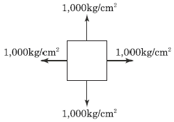
- 0.0003
- 0.0004
- 0.00⑤
- 0.0006
(정답률: 80%)

2. 다음 겔버보에서 E점의 휨모멘트 값은?
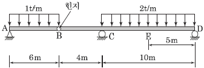
- M=19 tfㆍm
- M=24 tfㆍm
- M=31 tfㆍm
- M=71 tfㆍm
(정답률: 68%)
3. 다음 그림(A)와 같이 하중을 받기 전에 지점 B와 보 사이에 Δ의 간격이 있는 보가 있다. 그림(B)와 같이 이 보에 등분포하중 q 를 작용시켰을 때 지점 B의 반력이 qL 이 되게 하려면 Δ의 크기를 얼마로 하여야 하는 가? (단, 보의 휨강도 EI 는 일정하다.)
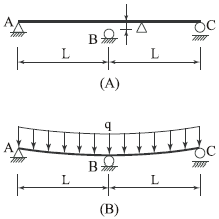
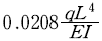
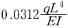
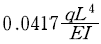
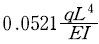
(정답률: 66%)
4. 아래의 표에서 설명하는 것은?
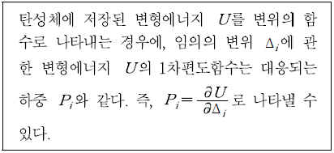
- 중첩의 원리
- Castigliano의 제1정리
- Betti의 정리
- Maxwell의 정리
(정답률: 78%)
5. 상하단이 고정인 기둥에 그림과 같이 힘 P 가 작용한다면 반력 RA , RB 의 값은?
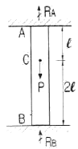
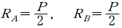
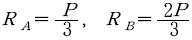
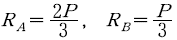
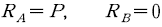
(정답률: 68%)
6. 그림 (a)와 (b)의 중앙점의 처짐이 같아지도록 그림 (b)의 등분포하중 w 를 그림 (a)의 하중 P 의 함수로 나타내면 얼마인가? (단, 재료는 같다.)
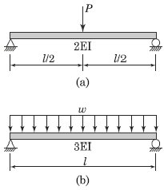
- 1.2 P/L
- 1.6 P/L
- 2.0 P/L
- 2.4 P/L
(정답률: 67%)
7. 길이가 6m인 양단힌지 기둥 I-250×125×10×19(mm)의 단면으로 세워졌다. 이 기둥이 좌굴에 대해서 지지하는 임계하중(Critical Load)은 얼마인가? (단, I 형강의 I1 과 I2 는 각각 7,340cm4과 560cm4이며, 탄성계수 E=2×106 kgf/cm2 이다.)
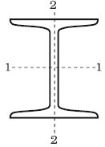
- 30.7tf
- 42.6tf
- 307tf
- 402.5tf
(정답률: 62%)
8. 그림과 같은 보에서 A점의 반력이 B점의 반력의 2배가 되도록 하는 거리 x 는 얼마인가?
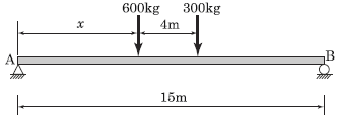
- 1.67m
- 2.67m
- 3.67m
- 4.67m
(정답률: 75%)
9. 주어진 T 형 단면의 캔틸레버 보에서 최대 전단응력은? (단, T 형보 단면의 IN.A=86.8 cm4)
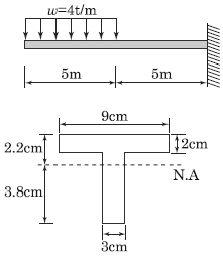
- 1,256.8kgf/cm2
- 1,663.6kgf/cm2
- 2,079.5kgf/cm2
- 2,433.2kgf/cm2
(정답률: 69%)
10. 아래 그림에서 블록 A를 뽑아내는데 필요한 힘 P는 최소 얼마 이상이어야 하는가? (단, 블록과 접촉면과의 마찰계수 μ=0.3 )
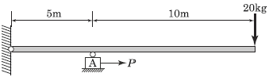
- 6kgf
- 9kgf
- 15kgf
- 18kgf
(정답률: 71%)
11. 지름 5cm의 강봉을 8tf로 당길 때 지름은 약 얼마나 줄어들겠는가? (단, 전단탄성계수 G=7.0×105kgf/cm2, 푸아송비 ν=0.5)
- 0.003mm
- 0.0⑤mm
- 0.007mm
- 0.008mm
(정답률: 54%)
12. 그림과 같은 구조물에서 C점의 수직처짐을 구하면? (단, EI=2×109kgfㆍcm2며 자중은 무시한다.)
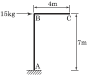
- 2.70mm
- 3.57mm
- 6.24mm
- 7.35mm
(정답률: 59%)
13. 그림과 같은 부정정보에서 지점 A의 휨모멘트값을 옳게 나타낸 것은?
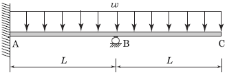
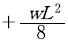
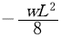
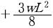
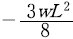
(정답률: 49%)
14. 정정보의 처짐과 처짐각을 계산할 수 있는 방법이 아닌 것은?
- 이중적분법(Double Integration Method)
- 공액보법(Conjugate Beam Method)
- 처짐각법(Slope Deflection Method)
- 단위하중법(Unit Load Method)
(정답률: 63%)
15. 그림에서와 같이 케이블 C점에서 하중 30kgf가 작용하고 있다. 이때 BC케이블에 작용하는 인장력은?
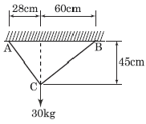
- 12.3kgf
- 15.9kgf
- 18.2kgf
- 22.1kgf
(정답률: 57%)
16. 트러스 해석 시 가정을 설명한 것 중 틀린 것은?
- 부재들은 양단에서 마찰이 없는 핀으로 연결되어진다.
- 하중과 반력은 모두 트러스의 격점에만 작용한다.
- 부재의 도심축은 직선이며 연결핀의 중심을 지난다.
- 하중으로 인한 트러스의 변형을 고려하여 부재력을 산출한다.
(정답률: 64%)
17. 그림과 같이 x, y 축에 대칭인 단면에 비틀림우력 5 tfㆍm가 작용할 때 최대전단응력은?
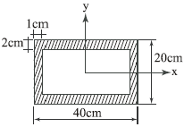
- 356.1 kgf/cm2
- 435.5 kgf/cm2
- 524.3 kgf/cm2
- 602.7 kgf/cm2
(정답률: 49%)
18. 그림과 같은 3활절 아치에서 A지점의 반력은?
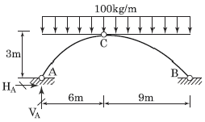
- VA=750 kgf(↑) , HA=900 kgf(→)
- VA=600 kgf(↑) , HA=600 kgf(→)
- VA=900 kgf(↑) , HA=1,200 kgf(→)
- VA=600 kgf(↑), HA=1,200 kgf(→)
(정답률: 71%)
19. 다음 삼각형의 X 축에 대한 단면1차모멘트는?
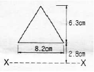
- 126.6 cm3
- 136.6 cm3
- 146.6 cm3
- 156.6 cm3
(정답률: 68%)
20. 길이 L 인 양단고정보 중앙에 200kgf의 집중하중이 작용하여 중앙점의 처짐이 5mm 이하가 되려면 L 은 최대 얼마 이하이어야 하는가? (단, E=2×106 kgf/cm2, I=100 cm4 )
- 324.72cm
- 377.68cm
- 457.89cm
- 524.14cm
(정답률: 48%)
2과목: 측량학
21. 완화곡선에 대한 설명으로 옳지 않은 것은?
- 모든 클로소이드(clothoid)는 닮음 꼴이며 클로소이드 요소는 길이의 단위를 가진 것과 단위가 없는 것이 있다.
- 완화곡선의 접선은 시점에서 원호에, 종점에서 직선에 접한다.
- 완화곡선의 반지름은 그 시점에서 무한대, 종점에서는 원곡선의 반지름과 같다.
- 완화곡선에 연한 곡선반지름의 감소율은 캔트(cant)의 증가율과 같다.
(정답률: 80%)
22. 그림과 같은 삼각형을 직선 AP로 분할하여 m:n=3:7의 면적비율로 나누기 위한 BP의 거리는? (단, BC의 거리 = 500m)
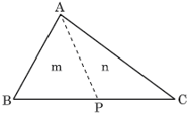
- 100m
- 150m
- 200m
- 250m
(정답률: 76%)
23. 토량 계산공식 중 양단면의 면적차가 클 때 산출된 토량의 일반적인 대소 관계로 옳은 것은? (단, 중앙단면법 : A, 양단면평균법 : B, 각주공식 : C)
- A = C < B
- A < C = B
- A < C < B
- A > C > B
(정답률: 59%)
24. 조정계산이 완료된 조정각 및 기선으로부터 처음 신설하는 삼각점의 위치를 구하는 계산 순서로 가장 적합한 것은?
- 편심조정계산 → 삼각형계산(변, 방향각) → 경위도계산 → 좌표조정계산 → 표고계산
- 편심조정계산 → 삼각형계산(변, 방향각) → 좌표조정계산 → 표고계산 → 경위도계산
- 삼각형계산(변, 방향각) → 편심조정계산 → 표고계산 → 경위도계산 → 좌표조정계산
- 삼각형계산(변, 방향각) → 편심조정계산 → 표고계산 → 좌표조정계산 → 경위도계산
(정답률: 45%)
25. 기선 D=30m, 수평각 α=80°, β=70°, 연직각 V=40°를 관측하였다면 높이 H 는? (단, A, B, C 점은 동일 평면임)
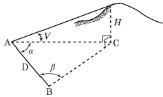
- 31.54m
- 32.42m
- 47.31m
- 55.32m
(정답률: 64%)
26. 축척 1:1000의 지형측량에서 등고선을 그리기 위한 측점에 높이의 오차가 50cm이었다. 그 지점의 경사각이 1°일 때 그 지점을 지나는 등고선의 도상오차는?
- 2.86cm
- 3.86cm
- 4.86cm
- 5.86cm
(정답률: 41%)
27. 평균표고 730m인 지형에서 AB 측선의 수평거리를 측정한 결과 5000m이었다면 평균해수면에서의 환산 거리는? (단, 지구의 반지름은 6370km)
- 5000.57m
- 5000.66m
- 4999.34m
- 4999.43m
(정답률: 52%)
28. A점에서 관측을 시작하여 A점으로 폐합시킨 폐합트래버스 측량에서 다음과 같은 측량결과를 얻었다. 이때 측선 AB의 배횡거는?
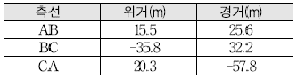
- 0m
- 25.6m
- 57.8m
- 83.4m
(정답률: 74%)
29. 세부도화 시 한 모델을 이루는 좌우사진에서 나오는 광속이 촬영면상에 이루는 종시차를 소거하여 목표 지형지물의 상대위치를 맞추는 작업을 무엇이라 하는 가?
- 접합표정
- 상호표정
- 절대표정
- 내부표정
(정답률: 55%)
30. 다각측량에서 어떤 폐합다각망을 측량하여 위거 및 경거의 오차를 구하였다. 거리와 각을 유사한 정밀도로 관측하였다면 위거 및 경거의 폐합오차를 배분하는 방법으로 가장 적당한 것은?
- 각 위거 및 경거에 등분배한다.
- 위거 및 경거의 크기에 비례하여 배분한다.
- 측선의 길이에 비례하여 분배한다.
- 위거 및 경거의 절대값의 총합에 대한 위거 및 경거의 크기에 비례하여 배분한다.
(정답률: 50%)
31. 노선측량에서 단곡선의 설치방법에 대한 설명으로 옳지 않은 것은?
- 중앙종거를 이용한 설치방법은 터널 속이나 삼림지대에서 벌목량이 많을 때 사용하면 편리하다.
- 편각설치법은 비교적 높은 정확도로 인해 고속도로나 철도에 사용할 수 있다.
- 접선편거와 현편거에 의하여 설치하는 방법은 줄자만을 사용하여 원곡선을 설치할 수 있다.
- 장현에 대한 종거와 횡거에 의하는 방법은 곡률반지름이 짧은 곡선일 때 편리하다.
(정답률: 54%)
32. 거리측량의 정확도가 1/10000 일 때 같은 정확도를 가지는 각 관측오차는?
- 18.6″
- 19.6″
- 20.6″
- 21.6″
(정답률: 69%)
33. GPS 측량에서 이용하지 않는 위성신호는?
- L1 반송파
- L2 반송파
- L4 반송파
- L5 반송파
(정답률: 71%)
34. 사진의 크기 23cm×18cm, 초점거리 30cm, 촬영고도 6000m일 때 이 사진의 포괄면적은?
- 16.6km2
- 14.4km2
- 24.4km2
- 26.6km2
(정답률: 52%)
35. 등고선에 관한 설명으로 옳지 않은 것은?
- 높이가 다른 등고선은 절대 교차하지 않는다.
- 등고선간의 최단거리 방향은 최급경사 방향을 나타낸다.
- 지도의 도면 내에서 폐합되는 경우 등고선의 내부에는 산꼭대기 또는 분지가 있다.
- 동일한 경사의 지표에서 등고선 간의 수평거리는 같다.
(정답률: 75%)
36. 삼변측량에 관한 설명 중 틀린 것은?
- 관측요소는 변의 길이 뿐이다.
- 관측값에 비하여 조건식이 적은 단점이 있다.
- 삼각형의 내각을 구하기 위해 cosine 제2법칙을 이용한다.
- 반각공식을 이용하여 각으로부터 변을 구하여 수직 위치를 구한다.
(정답률: 56%)
37. GIS 기반의 지능형 교통정보시스템(ITS)에 관한 설명으로 가장 거리가 먼 것은?
- 고도의 정보처리기술을 이용하여 교통운용에 적용한 것으로 운전자, 차량, 신호체계 등 매순간의 교통상황에 따른 대응책을 제시하는 것
- 도심 및 교통수요의 통제와 조정을 통하여 교통량을 노선별로 적절히 분산시키고 지체 시간을 줄여 도로의 효율성을 증대시키는 것
- 버스, 지하철, 자전거 등 대중교통을 효율적으로 운행관리하며 운행상태를 파악하여 대중교통의 운영과 운영사의 수익을 목적으로 하는 체계
- 운전자의 운전행위를 도와주는 것으로 주행 중 차량간격, 차선위반여부 등의 안전운행에 관한 체계
(정답률: 72%)
38. 캔트(cant)의 계산에서 속도 및 반지름을 2배로 하면 캔트는 몇 배가 되는가?
- 2배
- 4배
- 8배
- 16배
(정답률: 76%)
39. 하천의 수위관측소 설치를 위한 장소로 적합하지 않은 것은?
- 상하류의 길이가 약 100m 정도는 직선인 곳
- 홍수시 관측소가 유실 및 파손될 염려가 없는 곳
- 수위표를 쉽게 읽을 수 있는 곳
- 합류나 분류에 의해 수위가 민감하게 변화하여 다양한 수위의 관측이 가능한 곳
(정답률: 81%)
40. 평야지대에서 어느 한 측점에서 중간 장애물이 없는 26km 떨어진 어떤 측점을 시준할 때 어떤 측점에 세울 표척의 최소 높이는? (단, 기차상수는 0.14이고 지구곡률반지름은 6370km이다.)
- 16m
- 26m
- 36m
- 46m
(정답률: 62%)
3과목: 수리학 및 수문학
41. 원형 댐의 월류량( Qp)이 1000m3/s이고 수문을 개방하는데 필요한 시간(Tp)이 40초라 할 때 1/50 모형(模形)에서의 유량(Qm)과 개방 시간(Tm)은? (단, 중력가속도비(gr)는 1로 가정한다.)
- Qm=0.⑤7m3/s, Tm=5.657s
- Qm=1.623m3/s, Tm=0.825s
- Qm=56.56m3/s, Tm=0.825s
- Qm=115.00m3/s, Tm=5.657s
(정답률: 52%)
42. 일반 유체운동에 관한 연속 방정식은? (단, 유체의 밀도 ρ, 시간 t, x, y, z 방향의 속도는 u , v, w 이다.)
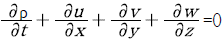
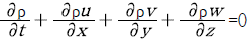
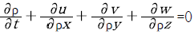
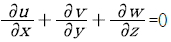
(정답률: 54%)
43. 안지름 1cm인 관로에 충만되어 물이 흐를 때 다음중 층류 흐름이 유지되는 최대유속은? (단, 동점성계수 υ=0.01cm2/s)
- 5cm/s
- 10cm/s
- 20cm/s
- 40cm/s
(정답률: 47%)
44. 면적 평균 강수량 계산법에 관한 설명으로 옳은 것은?
- 관측소의 수가 적은 산악지역에는 산술평균법이 적합하다.
- 티센망이나 등우선도 작성에 유역 밖의 관측소는 고려하지 말아야 한다.
- 등우선도 작성에 지형도가 반드시 필요하다.
- 티센 가중법은 관측소간의 우량변화를 선형으로 단순화한 것이다.
(정답률: 42%)
45. 다음 중 유역의 면적 평균 강우량 산정법이 아닌 것은?
- 산술평균법(Arithmetic mean method)
- Thiessen 방법(Thiessen method)
- 등우선법(Isohyetal method)
- 매닝공법(Manning method)
(정답률: 72%)
46. 보기의 가정 중 방정식 ΣFx=ρQ(v2-v1)에서 성립되는 가정으로 옳은 것은?
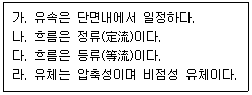
- 가, 나
- 가, 라
- 나, 라
- 다, 라
(정답률: 58%)
47. 그림과 같이 우물로부터 일정한 양수율로 양수를 하여 우물 속의 수위가 일정하게 유지되고 있다. 대수층은 균질하며 지하수의 흐름은 우물을 향한 방사상 정상류라 할 때 양수율(Q)를 구하는 식은? (단, k 는 투수계수임)
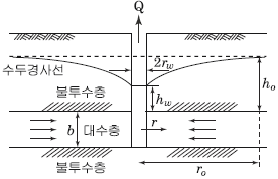
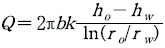
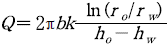
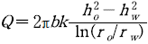
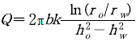
(정답률: 60%)
48. 지하수의 흐름에서 상 ㆍ 하류 두 지점의 수두차가 1.6m이고 두 지점의 수평거리가 480m인 경우, 대수층의 두께 3.5m, 폭 1.2m일 때의 지하수 유량은? (단, 투수계수 k=208m/day 이다.)
- 3.82m3/day
- 2.91m3/day
- 2.12m3/day
- 2.08m3/day
(정답률: 64%)
49. 수문을 갑자기 닫아서 물의 흐름을 막으면 상류(上流)쪽의 수면이 갑자기 상승하여 단상(段狀)이 되고, 이것이 상류로 향하여 전파되는 현상을 무엇이라 하는 가?
- 장파(長波)
- 단파(段波)
- 홍수파(洪水波)
- 파상도수(波狀跳水)
(정답률: 62%)
50. 그림과 같은 수로에서 단면 1의 수심 h1=1m, 단면 2의 수심 h2=0.4m라면 단면 2에서의 유속 V2는? (단, 단면 1과 2의 수로 폭은 같으며, 마찰손실은 무시한다.)
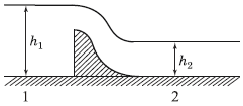
- 3.74m/s
- 4.⑤m/s
- 5.56m/s
- 2.47m/s
(정답률: 41%)
51. 댐 여수로 내 물받이(apron)에서 시점수위가 3.0m 이고, 폭이 50m, 방류량이 2000m3/s인 경우, 하류 수심은?
- 2.5m
- 8.0m
- 9.0m
- 13.3m
(정답률: 36%)
52. 다음 중 토양의 침투능(Infiltration Capacity) 결정방법에 해당되지 않는 것은?
- 침투계에 의한 실측법
- 경험공식에 의한 계산법
- 침투지수에 의한 방법
- 물수지 원리에 의한 산정법
(정답률: 64%)
53. 그림과 같은 직사각형 위어(weir)에서 유량계수를 고려하지 않을 경우 유량은? (단, g=중력가속도)
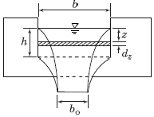
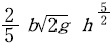
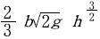
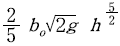
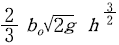
(정답률: 51%)
54. 유출(流出)에 대한 설명으로 옳지 않는 것은?
- 비가 오기 전의 유출을 기저유출이라 한다.
- 우량은 그 전량이 하천으로 유출된다.
- 일정기간에 하천으로 유출되는 수량의 합을 유출량(流出量)이라 한다.
- 유출량과 그 기간의 강수량과의 비(比)를 유출계수 또는 유출률(流出率)이라 한다.
(정답률: 69%)
55. n=0.013인 지름 600mm의 원형 주철관의 동수경사가 1/180일 때 유량은? (단, Manning 공식을 사용할 것)
- 1.62m3/s
- 0.148m3/s
- 0.458m3/s
- 4.122m3/s
(정답률: 56%)
56. 액체와 기체와의 경계면에 작용하는 분자인력에 의한 힘은?
- 모관현상
- 점성력
- 표면장력
- 내부마찰력
(정답률: 71%)
57. 빙산의 비중이 0.92이고 바닷물의 비중은 1.025일 때 빙산이 바닷물 속에 잠겨있는 부분의 부피는 수면 위에 나와 있는 부분의 약 몇 배인가?
- 10.8배
- 8.8배
- 4.8배
- 0.8배
(정답률: 62%)
58. 오리피스(Orifice)의 이론과 가장 관계가 먼 것은?
- 토리첼리(Torricelli) 정리
- 베르누이(Bernoulli) 정리
- 베나콘트랙타(Vena Contracta)
- 모세관현상의 원리
(정답률: 59%)
59. 점성을 가지는 유체가 흐를 때 다음 설명 중 틀린 것은?
- 원형관 내의 층류 흐름에서 유량은 점성계수에 반비례하고 직경의 4제곱(승)에 비례한다.
- Darcy-Weisbach의 식은 원형관 내의 마찰손실수두를 계산하기 위하여 사용된다.
- 층류의 경우 마찰손실계수는 Reynolds 수에 반비례한다.
- 에너지 보정계수는 이상유체에서의 압력수두를 보정하기 위한 무차원상수이다.
(정답률: 43%)
60. 수위-유량 관계곡선의 연장 방법이 아닌 것은?
- 전 대수지법
- Stevens 방법
- Manning 공식에 의한 방법
- 유량 빈도 곡선법
(정답률: 41%)
4과목: 철근콘크리트 및 강구조
61. 그림의 단순지지 보에서 긴장재는 C점에 150mm의 편차에 직선으로 배치되고, 1000kN으로 긴장되었다. 보의 고정하중은 무시할 때 C점에서의 휨 모멘트는 얼마인가? (단, 긴장재의 경사가 수평압축력에 미치는 영향 및 자중은 무시한다.)
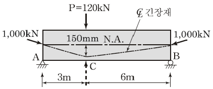
- Mc =90kN ㆍ m
- Mc =-150kN ㆍ m
- Mc =240kN ㆍ m
- Mc =390kN ㆍ m
(정답률: 48%)
62. 직사각형 기둥(300mm×450mm)인 띠철근 단주의 공칭축강도(Pn)는 얼마인가?(단, fck =28 MPa, fy =400MPa, Ast =3854mm2)
- 2611.2kN
- 3263.2kN
- 3730.3kN
- 3963.4kN
(정답률: 57%)
63. bw=300mm, d =550mm, d' =50mm, As =4500mm2, As'=2200mm2인 복철근 직사각형 보가 연성파괴를 한다면 설계 휨모멘트 강도(φMn)는 얼마인가?(단, fck =21MPa, fy =300MPa)
- 516.3kN ㆍ m
- 565.3kN ㆍ m
- 599.3kN ㆍ m
- 612.9kN ㆍ m
(정답률: 59%)
64. 그림과 같은 단순 PSC 보에서 계수등분포하중 W=30kN/m가 작용하고 있다. 프리스트레스에 의한 상향력과 이 등분포 하중이 비기기 위해서는 프리스트레스힘 P를 얼마로 도입해야 하는가?
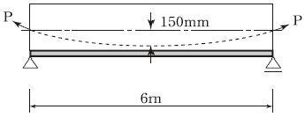
- 900kN
- 1200kN
- 1500kN
- 1800kN
(정답률: 59%)
65. 아래 표의 조건에서 표준갈고리가 있는 인장 이형 철근의 기본정착길이( lhb)는 약 얼마인가?
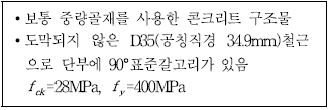
- 635mm
- 660mm
- 1130mm
- 1585mm
(정답률: 38%)
66. 아래 그림과 같은 단철근 T형보에서 등가압축응력의 깊이(a)는? (단, fck =21MPa, fy=300MPa)
- 75mm
- 80mm
- 90mm
- 103mm
(정답률: 66%)
67. 그림과 같은 맞대기 용접의 용접부에 발생하는 인장 응력은?
- 100MPa
- 150MPa
- 200MPa
- 220MPa
(정답률: 74%)
68. 부재의 설계 시 적용되는 강도감수계수( φ )에 대한 설명 중 옳지 않은 것은?
- 압축지배단면에서 나선철근으로 보강된 철근콘크리트 부재의 강도감소계수는 0.70이다.
- 인장지배 단면에서의 강도감소계수는 0.85이다.
- 공칭강도에서 최외단 인장철근의 순인장 변형률(εt)이 압축지배와 인장지배단면 사이일 경우에는 εt가 압축지배변형률 한계에서 인장지배변형률 한계로 증가함에 따라 φ 값을 압축지배단면에 대한 값에서 0.85까지 증가시킨다.
- 포스트텐션 정착구역에서 강도감소계수는 0.80이다.
(정답률: 59%)
69. 아래의 표에서 설명하는 것은?
- 플랫 슬래브
- 플랫 플레이트
- 주열대
- 리브 쉘
(정답률: 59%)
70. 옹벽의 구조해석에서 T형보로 설계하여야 하는 부분은?
- 뒷부벽
- 앞부벽
- 부벽식 옹벽의 전면벽
- 캔틸레버식 옹벽의 저판
(정답률: 74%)
71. 아래 그림의 보에서 계수전단력 Vu=262.5kN에 대한 가장 적당한 스터럽 간격은? (단, 사용된 스터럽은 D13철근이다. 철근 D13의 단면적은 127mm2, fck=24MPa, fsyt =350MPa이다.)
- 125mm
- 195mm
- 210mm
- 250mm
(정답률: 46%)
72. 길이 6m인 철근콘크리트 캔틸레버보의 처짐을 계산하지 않는 경우 보의 최소두께는? (단, fck =28MPa, fy=350MPa)
- 279mm
- 349mm
- 558mm
- 698mm
(정답률: 54%)
73. 경간이 6m인 직사각형 철근 콘크리트 단순보(폭 300mm, 전체 높이 500mm)가 자중에 의한 등분포하중과 활하중인 집중하중 PL 이 보의 중앙에 작용되었다. 주어진 단면의 설계 휨강도(φMn)가 200kN ㆍ m이라면, 최대로 작용 가능한 PL 의 크기는? (단, 철근콘크리트 단위중량은 25kN/m3)(오류 신고가 접수된 문제입니다. 반드시 정답과 해설을 확인하시기 바랍니다.)
- 45.9kN
- 51.5kN
- 62.4kN
- 73.2kN
(정답률: 25%)
74. 그림과 같은 필렛 용접에서 목 두께가 옳게 표시된 것은?
- S
(정답률: 72%)
75. 콘크리트의 압축강도(fck)가 35MPa, 철근의 항복강도(fy)가 400MPa, 폭이 350mm, 유효깊이가 600mm인 단철근 직사각형 보의 최소 철근량은 얼마인가?
- 690mm2
- 735mm2
- 752mm2
- 777mm2
(정답률: 62%)
76. 아래 그림의 지그재그로 구멍이 있는 판에서 순폭을 구하면? (단, 구멍직경=25mm)
- bn =187mm
- bn =141mm
- bn =137mm
- bn =125mm
(정답률: 69%)
77. 2방향 슬래브 직접설계법의 제한사항에 대한 설명으로 틀린 것은?
- 각 방향으로 3경간 이상 연속되어야 한다.
- 슬래브 판들은 단변 경간에 대한 장변 경간의 비가 2이하인 직사각형이어야 한다.
- 각 방향으로 연속한 받침부 중심간 경간 차이는 긴 경간의 1/3 이하이어야 한다.
- 연속한 기둥 중심선을 기준으로 기둥의 어긋남은 그 방향 경간의 20% 이하이어야 한다.
(정답률: 66%)
78. bw=300mm, d=450mm인 단철근 직사각형 보의 균형 철근량은 약 얼마인가? (단, fck=35MPa, fy=300MPa)
- 7590mm2
- 7320mm2
- 7150mm2
- 7010mm2
(정답률: 59%)
79. 철근의 정착에 대한 다음 설명 중 옳지 않은 것은?
- 휨철근을 정착할 때 절단점에서 Vu 가 (3/4) Vn 을 초과하지 않을 경우 휨철근을 인장구역에서 절단해도 좋다.
- 갈고리는 압축을 받는 구역에서 철근정착에 유효하지 않은 것으로 보아야 한다.
- 철근의 인장력을 부착만으로 전달할 수 없는 경우에는 표준 갈고리를 병용한다.
- 단순부재에서는 정모멘트 철근의 1/3이상, 연속부재에서는 정모멘트 철근의 1/4 이상을 부재의 같은 면을 따라 받침부까지 연장하여야 한다.
(정답률: 48%)
80. 포스트텐션 긴장재의 마찰손실을 구하기 위해 아래의 표와 같은 근사식을 사용하고자 한다. 이때 근사식을 사용할 수 있는 조건으로 옳은 것은?
- Po 의 값이 5000kN이하인 경우
- Po 의 값이 5000kN을 초과하는 경우
- (Kl+μα)의 값이 0.3이하인 경우
- (Kl+μα)의 값이 0.3을 초과하는 경우
(정답률: 60%)
5과목: 토질 및 기초
81. 어느 흙 댐의 동수경사 1.0, 흙의 비중이 2.65, 함수비 40%인 포화토에 있어서 분사현상에 대한 안전율을 구하면?
- 0.8
- 1.0
- 1.2
- 1.4
(정답률: 60%)
82. 굳은 점토지반에 앵커를 그라우팅하여 고정시켰다. 고정부의 길이가 5m, 직경 20cm, 시추공의 직경은 10cm 이었다. 점토의 비배수전단강도 cu=1.0 kg/cm2, ø＝0°이라고 할 때 앵커의 극한지지력은?(단, 표면마찰계수는 0.6으로 가정한다.)
- 9.4ton
- 15.7ton
- 18.8ton
- 31.3ton
(정답률: 35%)
83. Sand drain의 지배영역에 관한 Barron의 정삼각형 배치에서 샌드 드레인의 간격을 d, 유효원의 직경을 de라 할 때 de를 구하는 식으로 옳은 것은?
- de = 1.128d
- de = 1.028d
- de = 1.⑤0d
- de = 1.50d
(정답률: 67%)
84. 어느 점토의 체가름 시험과 액 ㆍ 소성시험 결과 0.002mm(2μm) 이하의 입경이 전시료 중량의 90%, 액성한계 60%, 소성한계 20% 이었다. 이 점토 광물의 주성분은 어느 것으로 추정되는가?
- Kaolinite
- Illite
- Calcite
- Montmorillonite
(정답률: 56%)
85. 응력경로(Stress path)에 대한 설명으로 옳지 않은 것은?
- 응력경로는 특성상 전응력으로만 나타낼 수 있다.
- 응력경로란 시료가 받는 응력의 변화과정을 응력공간에 궤적으로 나타낸 것이다.
- 응력경로는 Mohr의 응력원에서 전단응력이 최대인 점을 연결하여 구해진다.
- 시료가 받는 응력상태에 대해 응력경로를 나타내면 직선 또는 곡선으로 나타내어진다.
(정답률: 65%)
86. 10m 깊이의 쓰레기층을 동다짐을 이용하여 개량하려고 한다. 사용할 햄머 중량이 20t, 하부면적 반경 2m의 원형 블록을 이용한다면, 햄머의 낙하고는?
- 15m
- 20m
- 25m
- 23m
(정답률: 36%)
87. 어떤 점토지반의 표준관입 실험 결과 N값이 2~4이었다. 이 점토의 consistency는?
- 대단히 견고
- 연약
- 견고
- 대단히 연약
(정답률: 62%)
88. Δh1=5이고, kv2=10 kv1일 때, kv3의 크기는?
- 1.0 kv1
- 1.5 kv1
- 2.0 kv1
- 2.5 kv1
(정답률: 52%)
89. Rod에 붙인 어떤 저항체를 지중에 넣어 관입, 인발 및 회전에 의해 흙의 전단강도를 측정하는 원위치 시험은?
- 보링(boring)
- 사운딩(sounding)
- 시료채취(sampling)
- 비파괴 시험(NDT)
(정답률: 66%)
90. 평판재하 시험에서 재하판의 크기에 의한 영향(scale effect)에 관한 설명 중 틀린 것은?
- 사질토 지반의 지지력은 재하판의 폭에 비례한다.
- 점토지반의 지지력은 재하판의 폭에 무관하다.
- 사질토 지반의 침하량은 재하판의 폭이 커지면 약간 커지기는 하지만 비례하는 정도는 아니다.
- 점토지반의 침하량은 재하판의 폭에 무관하다.
(정답률: 55%)
91. 어떤 점토의 토질실험 결과 일축압축강도는 0.48kg/ cm2, 단위중량 1.7t/m3이었다. 이 점토의 한계고는 얼마인가?
- 6.34m
- 4.87m
- 9.24m
- 5.65m
(정답률: 59%)
92. 2m×2m인 정방형 기초가 1.5m 깊이에 있다. 이 흙의 단위중량 γ=1.7 t/m3, 점착력 c=0이며, Nr=19, Nq=22이다. Terzaghi의 공식을 이용하여 전허용하중 (Qall)을 구한 값은?(단, 안전율 Fs=3 으로 한다.)
- 27.3t
- 54.6t
- 81.9t
- 109.3t
(정답률: 49%)
93. 약액주입공법은 그 목적이 지반의 차수 및 지반보강에 있다. 다음 중 약액주입공법에서 고려해야할 사항으로 거리가 먼 것은?
- 주입율
- Piping
- Grout 배합비
- Gel Time
(정답률: 62%)
94. 유선망의 특징을 설명한 것으로 옳지 않은 것은?
- 각 유로의 침투유량은 같다.
- 유선과 등수두선은 서로 직교한다.
- 유선망으로 이루어지는 사각형은 이론상 정사각형이다.
- 침투속도 및 동수구배는 유선망의 폭에 비례한다.
(정답률: 65%)
95. 연약점토지반에 성토제방을 시공하고자 한다. 성토로 인한 재하속도가 과잉간극수압이 소산되는 속도보다 빠를 경우, 지반의 강도정수를 구하는 가장 적합한 시험방법은?
- 압밀 배수시험
- 압밀 비배수시험
- 비압밀 비배수시험
- 직접전단시험
(정답률: 66%)
96. 그림과 같은 점성토 지반의 토질실험결과 내부마찰각 φ=30°, 점착력 c=1.5t/m2일 때 A점의 전단강도는?
- 5.31t/m2
- 5.95t/m2
- 6.38t/m2
- 7.04t/m2
(정답률: 65%)
97. γsat=2.0t/m3인 사질토가 20°로 경사진 무한사면이 있다. 지하수위가 지표면과 일치하는 경우 이 사면의 안전율이 1 이상이 되기 위해서는 흙의 내부마찰각이 최소 몇 도 이상이어야 하는가?
- 18.21°
- 20.52°
- 36.06°
- 45.47°
(정답률: 58%)
98. 아래와 같은 흙의 입도분포곡선에 대한 설명으로 옳은 것은?
- A는 B보다 유효경이 작다.
- A는 B보다 균등계수가 작다.
- C는 B보다 균등계수가 크다.
- B는 C보다 유효경이 크다.
(정답률: 59%)
99. 그림과 같은 5m 두께의 포화점토층이 10t/m2의 상재하중에 의하여 30cm의 침하가 발생하는 경우에 압밀도는 약 U=60%에 해당하는 것으로 추정되었다. 향후 몇년이면 이 압밀도에 도달하겠는가?(단, 압밀계수(Cv)=3.6×10-4cm2/sec)
- 약 1.3년
- 약 1.6년
- 약 2.2년
- 약 2.4년
(정답률: 54%)
100. 현장 흙의 단위중량을 구하기 위해 부피 500cm3의 구멍에서 파낸 젖은 흙의 무게가 900g이고, 건조시킨 후의 무게가 800g이다. 건조한 흙 400g을 몰드에 가장 느슨한 상태로 채운 부피가 280cm3이고, 진동을 가하여 조밀하게 다진 후의 부피는 210cm3이다. 흙의 비중이 2.7일 때 이 흙의 상대밀도는?
- 33%
- 38%
- 43%
- 48%
(정답률: 47%)
6과목: 상하수도공학
101. 하수관거내에 황화수소(H2S)가 존재하는 이유에 대한 설명으로 옳은 것은?
- 용존산소로 인해 유황이 산화하기 때문이다.
- 용존산소 결핍으로 박테리아가 메탄가스를 환원시키기 때문이다.
- 용존산소 결핍으로 박테리아가 황산염을 환원시키기 때문이다.
- 용존산소로 인해 박테리아가 메탄가스를 환원시키기 때문이다.
(정답률: 58%)
102. 수원으로부터 취수된 상수가 소비자까지 전달되는 일반적 상수도의 구성순서로 옳은 것은?
- 도수-송수-정수-배수-급수
- 송수-정수-도수-급수-배수
- 도수-정수-송수-배수-급수
- 송수-정수-도수-배수-급수
(정답률: 72%)
103. 폭기조내 MLSS가 3,000mg/L, 체류시간 4시간, 폭기조의 크기가 1000m3인 활성슬러지 공정에서 최종 유출수의 SS는 20mg/L일 때 매일 폐기되는 슬러지는 60m3이다. 폐슬러지의 농도가 10,000mg/L 이라면 세포의 평균체류 시간은?
- 4.2일
- 8.2일
- 10일
- 25일
(정답률: 30%)
104. 하수고도처리 방법으로 질소, 인 동시제거 공정은?
- 혐기 무산소 호기 조합법
- 연속회분식 활성슬러지법
- 정석탈인법
- 혐기 호기 활성슬러지법
(정답률: 64%)
1⑤. 합류식 하수관거의 최소 관경은?
- 100mm
- 150mm
- 200mm
- 250mm
(정답률: 56%)
106. 격자식 배수관망이 수지상식 배수관망에 비해 갖는 장점은?
- 단수구역이 좁아진다.
- 수리계산이 간단하다.
- 관의 부설비가 작아진다.
- 제수밸브를 적게 설치해도 된다.
(정답률: 56%)
107. 관거별 계획하수량 선정시 고려해야 할 사항으로 적합하지 않은 것은?
- 오수관거는 계획시간 최대오수량을 기준으로 한다.
- 우수관거에서는 계획우수량을 기준으로 한다.
- 합류식 관거는 계획시간 최대오수량에 계획우수량을 합한 것을 기준으로 한다.
- 차집관거는 계획시간 최대오수량에 우천시 계획우수량을 합한 것을 기준으로 한다.
(정답률: 60%)
108. 하수관거의 접합 중에서 굴착깊이를 얕게 하므로 공사비용을 줄일 수 있으며, 수위상승을 방지하고 양정고를 줄일 수 있어 펌프로 배수하는 지역에 적합한 방법은?
- 관정 접합
- 관저 접합
- 수면 접합
- 관중심 접합
(정답률: 69%)
109. 다음 생물학적 처리 방법 중 생물막 공법은?
- 산화구법
- 살수여상법
- 접촉안정법
- 계단식 폭기법
(정답률: 63%)
110. 종말 침전지에서 유출되는 수량이 5000m3/day 이다. 여기에 염소처리를 하기 위하여 유출수에 100kg/day의 염소를 주입한 후 잔류염소의 농도를 측정하였더니 0.5mg/L이었다면 염소요구량(농도)은? (단, 염소는 Cl2 기준)
- 16.5mg/L
- 17.5mg/L
- 18.5mg/L
- 19.5mg/L
(정답률: 36%)
111. 지표수를 수원으로 하는 경우의 상수시설 배치순 서로 가장 적합한 것은?
- 취수탑-침사지-응집침전지-여과지-배수지
- 집수매거-응집침전지-침사지-여과지-배수지
- 취수문-여과지-보통침전지-배수탑-배수관망
- 취수구-약품침전지-혼화지-여과지-배수지
(정답률: 67%)
112. 합류식 하수도에 대한 설명으로 옳지 않은 것은?
- 청천시에는 수위가 낮고 유속이 적어 오물이 침전하기 쉽다.
- 우천시에 처리장으로 다량의 토사가 유입되어 침전지에 퇴적된다.
- 소규모 강우시 강우 초기에 도로나 관로 내에 퇴적된 오염물이 그대로 강으로 합류할 수 있다.
- 단일관로로 오수와 우수를 배제하기 때문에 침수 피해의 다발 지역이나 우수배제 시설이 정비되지 않은 지역에서는 유리한 방식이다.
(정답률: 59%)
113. 완속여과지에서 모래층의 두께는 수질과 관계가 깊다. 간단한 삭취만으로 여과기능을 재생하기 위한 모래층의 최초 또는 보사후의 두께는?
- 10~20cm
- 70~90cm
- 100~120cm
- 150~160cm
(정답률: 59%)
114. 계획우수량 산정시 유입시간을 산정하는 일반적인 Kerby식과 스에이시식에서 각 계수와 유입시간의 관계로 틀린 것은?
- 유입시간과 지표면 거리는 비례 관계이다.
- 유입시간과 지체계수는 반비례 관계이다.
- 유입시간과 지표면 평균경사는 반비례 관계이다.
- 유입시간과 설계 강우강도는 반비례 관계이다.
(정답률: 43%)
115. 상수도 송수시설의 용량산정을 위한 계획송수량의 기준이 되는 수량은?
- 계획 1일 최대급수량
- 계획 1일 평균급수량
- 계획 1인1일 최대급수량
- 계획 1인1일 평균급수량
(정답률: 63%)
116. 혐기성 소화 공정의 영향 인자가 아닌 것은?
- 체류시간
- 온도
- 메탄함량
- 알칼리도
(정답률: 62%)
117. 혐기성 소화에서 탄산염 완충시스템의 관여하는 알칼리도의 종류가 아닌 것은?
(정답률: 55%)
118. 하수도시설에서 펌프의 선정기준 중 틀린 것은?
- 전양정이 5m 이하이고 구경이 400mm 이상인 경우는 축류펌프를 선정한다.
- 전양정이 4m 이상이고 구경이 80mm 이상인 경우는 원심펌프를 선정한다.
- 전양정이 5~20m이고 구경이 300mm 이상인 경우는 원심사류펌프로 한다.
- 전양정이 3~12m이고 구경이 400mm 이상인 경우는 원심펌프로 한다.
(정답률: 42%)
119. 상수도에 있어서 도ㆍ송수관거의 평균유속의 허용최대값은?
- 3m/s
- 4m/s
- 5m/s
- 6m/s
(정답률: 68%)
120. 슬러지 농축과 탈수에 대한 설명 중 틀린 것은?
- 농축은 자연의 중력에 의한 방법이 가장 간단하며 경제적인 처리 방법이다.
- 농축은 매립이나 해양투기를 하기 전에 슬러지 용적을 감소시켜 준다.
- 탈수는 기계적 방법으로 진공여과, 가압여과 및 원심탈수법이 있다.
- 중력 농축의 슬러지 제거기기 설치시 바닥 기울기는 1/100 이상이다.
(정답률: 54%)
이축응력은 σx - σy 입니다. 따라서 이 문제에서는 20 - 10 = 10(kgf/cm2) 입니다.
다음으로, 푸아송비를 이용하여 수평방향의 변형률을 구합니다. 푸아송비는 ν = -εy/εx 이므로, εy = -νεx 입니다. 여기서 εx는 수직방향의 변형률이므로, 이를 구하기 위해서는 히포체어의 법칙을 이용합니다.
히포체어의 법칙에 따르면, 체적변형률은 εx + εy + εz = 0 입니다. 이 문제에서는 z방향의 변형률이 없으므로, εz = 0 입니다. 따라서 εx + εy = 0 이고, εy = -εx 입니다.
이제 수평방향의 변형률을 구하기 위해서는 다음과 같이 계산합니다.
εx = ΔL/L = (103 kgf/cm2)/(2×106 kgf/cm2) = 0.0⑤
따라서, εy = -νεx = -0.3×0.0⑤ = -0.0015 입니다.
마지막으로, 체적변형률을 구하기 위해서는 다음과 같이 계산합니다.
εv = εx + εy = 0.0⑤ - 0.0015 = 0.0035
이제 체적변형률을 구했으므로, 이를 답안으로 선택할 수 있습니다. 따라서 정답은 "0.0004" 입니다.